GIS data
Tim Trice
2017-06-22
library(dplyr)
library(ggplot2)
library(rrricanes)Most storms will contain a variation of GIS datasets that can be plotted with ggplot2. The helper functions for this have the prefix ‘gis’.
All products are experimental and there maybe fluctuations particularly in current datasets.
In general, datasets are available for storms dated back to 1998. However, products such as Wind Speed Probabilities only go back to 1999.
Some datasets require the use of the storm key and an optional advisory. Other products require a datetime value and cannot be isolated by storm key or advisory. The datetime values are not based on the issue time of the advisory, but rather three hours prior. For example, if you are seeking a dataset where the forecast/advisory was issued at 9:00AM UTC, you will want the dataset for 6:00AM UTC. This will be explained a little further below.
Build a Tracking Chart
There are three functions available to help you plot GIS data; tracking_chart, al_tracking_chart and ep_tracking_chart. al_tracking_chart and ep_tracking_chart are just helpers centered on the Atlantic and northeast Pacific ocean, respectively.
Building tracking charts requires the rnaturalearthdata and, for high resolution charts, rnaturalearthhires packages.
args(rrricanes::tracking_chart)## function (countries = TRUE, states = TRUE, res = 110, ...)
## NULLThe countries and states parameters are TRUE by default. This means a basic call to tracking_chart will return a map with country and state borders. The basic call does not show this.
## Regions defined for each Polygons
## Regions defined for each Polygons
You can pass typical aes parameters to refine the color and fill of the plot; remember the tracking chart is a ggplot object.
tracking_chart(color = "black", fill = "white", size = 0.1)## Regions defined for each Polygons
## Regions defined for each Polygons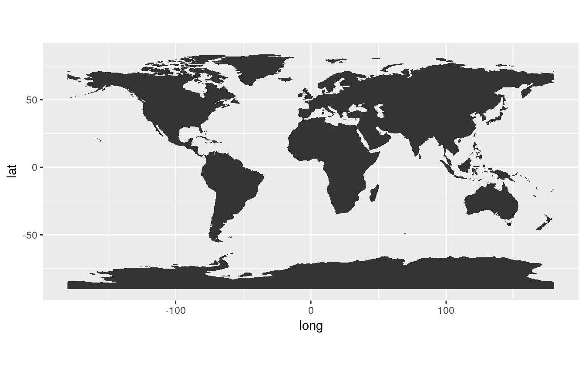
You may choose to only show coastline data instead. In this case, just set the countries parameter to FALSE.
tracking_chart(countries = FALSE, res = 50, color = "black", fill = "white",
size = 0.1)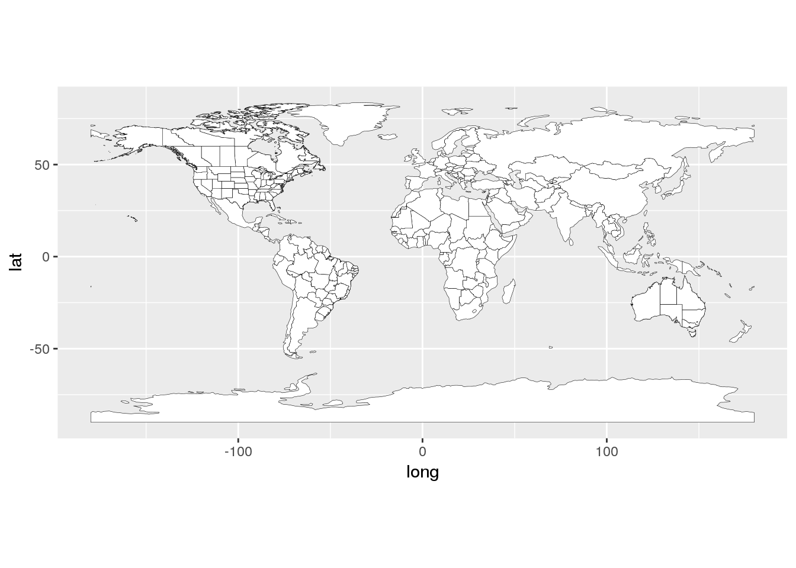
For the purposes of this vignette we’ll focus on Atlantic storms.
(p <- al_tracking_chart(color = "black", fill = "white", size = 0.1, res = 50))## Regions defined for each Polygons
## Regions defined for each Polygons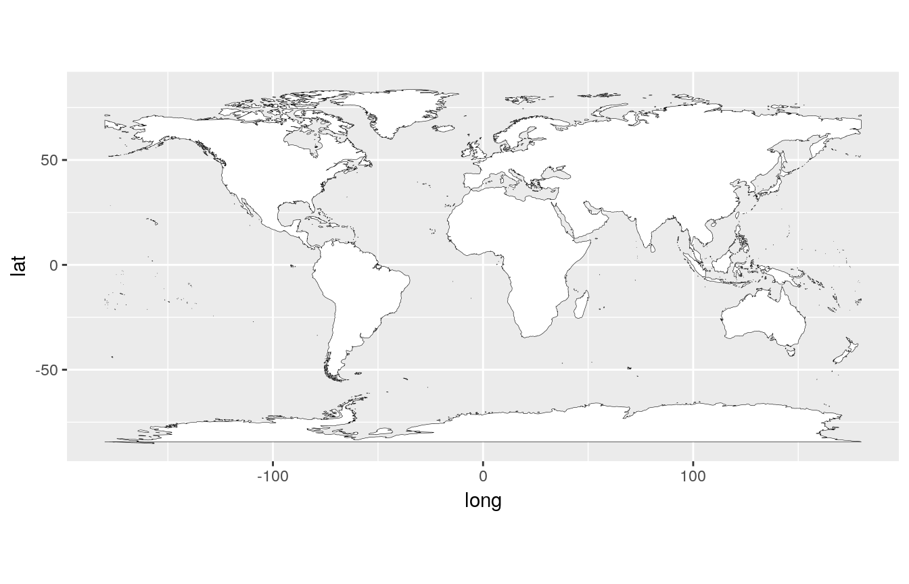
The res parameter defines the resolution of the chart presented. Options are in 110nm, 50nm and 10nm. The lower the resolution the longer the chart takes to be built.
States cannot be drawn on resolution greater than 50nm.
GIS Datasets
There are several datasets that are published for active cyclones. The following functions are designed to return the URL to those datasets:
gis_advisorygis_prob_storm_surgegis_windfieldgis_latest
Advisory Package
gis_advisory(key = "AL182012", advisory = "18")## [1] "http://www.nhc.noaa.gov/gis/forecast/archive/al182012_5day_018.zip"adv <- gis_advisory(key = "AL182012", advisory = "18") %>% gis_download()names(adv)## [1] "al182012_018_5day_lin" "al182012_018_5day_pgn" "al182012_018_5day_pts"
## [4] "al182012_018_ww_wwlin"For this particular storm and advisory, included are the base line, point and polygon datasets along with a dataset for watches and warnings. The objects returned are spatial dataframes contained within the list of dataframes, adv.
Line track
str(adv$al182012_018_5day_lin)## Formal class 'SpatialLinesDataFrame' [package "sp"] with 4 slots
## ..@ data :'data.frame': 2 obs. of 7 variables:
## .. ..$ STORMNAME: chr [1:2] "SANDY" "SANDY"
## .. ..$ STORMTYPE: chr [1:2] "HU" "HU"
## .. ..$ ADVDATE : chr [1:2] "121026/2100" "121026/2100"
## .. ..$ ADVISNUM : chr [1:2] "18" "18"
## .. ..$ STORMNUM : num [1:2] 18 18
## .. ..$ FCSTPRD : num [1:2] 72 120
## .. ..$ BASIN : chr [1:2] "al" "al"
## ..@ lines :List of 2
## .. ..$ :Formal class 'Lines' [package "sp"] with 2 slots
## .. .. .. ..@ Lines:List of 1
## .. .. .. .. ..$ :Formal class 'Line' [package "sp"] with 1 slot
## .. .. .. .. .. .. ..@ coords: num [1:6, 1:2] -77.1 -77 -76.1 -74.3 -72.6 ...
## .. .. .. ..@ ID : chr "0"
## .. ..$ :Formal class 'Lines' [package "sp"] with 2 slots
## .. .. .. ..@ Lines:List of 1
## .. .. .. .. ..$ :Formal class 'Line' [package "sp"] with 1 slot
## .. .. .. .. .. .. ..@ coords: num [1:8, 1:2] -77.1 -77 -76.1 -74.3 -72.6 ...
## .. .. .. ..@ ID : chr "1"
## ..@ bbox : num [1:2, 1:2] -77.1 27.3 -71.5 41
## .. ..- attr(*, "dimnames")=List of 2
## .. .. ..$ : chr [1:2] "x" "y"
## .. .. ..$ : chr [1:2] "min" "max"
## ..@ proj4string:Formal class 'CRS' [package "sp"] with 1 slot
## .. .. ..@ projargs: chr "+proj=longlat +a=6371200 +b=6371200 +no_defs"fcst_line <- as(adv$al182012_018_5day_lin, "SpatialPointsDataFrame") %>%
broom::tidy()## Warning in tidy.default(.): No method for tidying an S3 object of class
## SpatialPointsDataFrame , using as.data.framep + geom_path(data = fcst_line, aes(coords.x1, coords.x2, group = FCSTPRD))
Forecast Cone
Forecast cone data is contained in the polygon dataset. To deal with this dataset we need to make some steps to build an appropriate dataframe.
fcst <- adv$al182012_018_5day_pgn
fcst@data$id <- rownames(fcst@data)
fcst.points = broom::tidy(fcst, region = "id")
fcst <- dplyr::left_join(fcst.points, fcst@data, by = "id")p + geom_polygon(data = fcst %>% filter(FCSTPRD == 120),
aes(long, lat, group = group, fill = factor(FCSTPRD))) +
geom_polygon(data = fcst %>% filter(FCSTPRD == 72),
aes(long, lat, group = group, fill = factor(FCSTPRD)))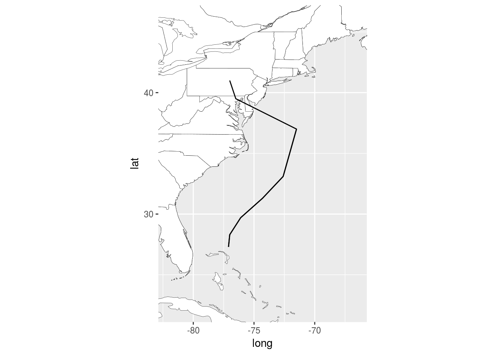
Watches and Warnings
p + geom_path(data = adv$al182012_018_ww_wwlin,
aes(x = long, y = lat, group = group), size = 2)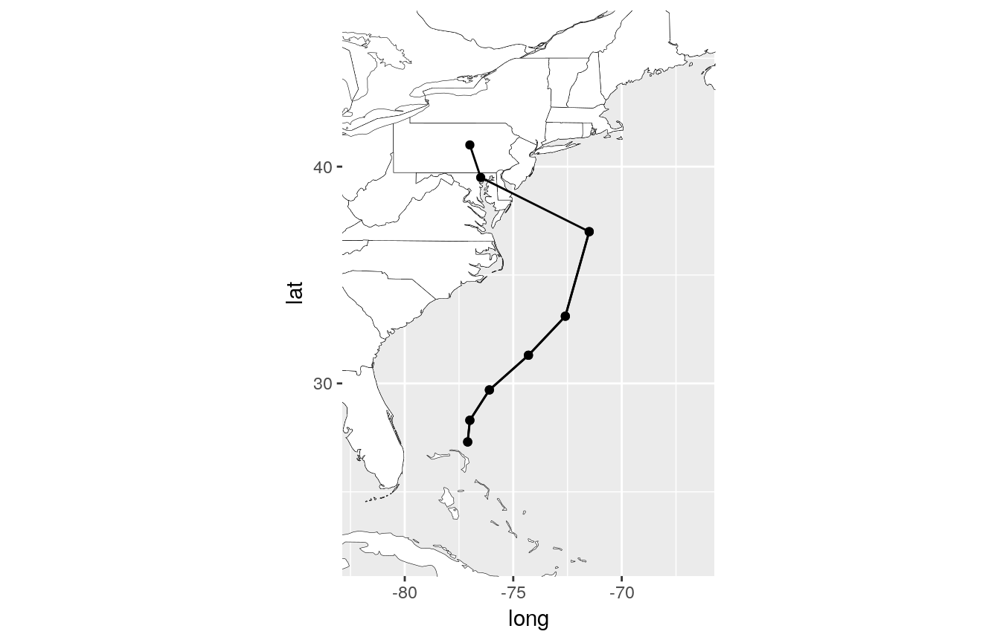
Probabilistic Storm Surge
The Tropical Cyclone Storm Surge Probabilities data shows the probability, in percent, of a specified storm surge occurring during the forecast period indicated. The product is based upon an ensemble of Sea, Lake, and Overland Surge from Hurricanes (SLOSH) model runs using the National Hurricane Center (NHC) official advisory and accounts for track, size, and intensity errors based on historical errors.
see: http://www.nhc.noaa.gov/gis/metadata_ex_gt5_at.xml
- Does not take an advisory number
-
datetimeandnobsparameters created to help
cumulative probablity of storm surge greater than 5ft
gis_prob_storm_surge(key = "AL142016", products = list(psurge = 0),
datetime = "20161006")## [1] "http://www.nhc.noaa.gov/gis/storm_surge/al142016_psurge0_2016100600.zip"
## [2] "http://www.nhc.noaa.gov/gis/storm_surge/al142016_psurge0_2016100606.zip"
## [3] "http://www.nhc.noaa.gov/gis/storm_surge/al142016_psurge0_2016100612.zip"
## [4] "http://www.nhc.noaa.gov/gis/storm_surge/al142016_psurge0_2016100618.zip"ss <- gis_prob_storm_surge(key = "AL142016",
products = list(psurge = 0),
datetime = "20161006") %>%
last() %>%
gis_download()p + geom_path(data = ss$al142016_2016100618_gt0,
aes(x = long, y = lat, group = group), size = 1)## Regions defined for each Polygons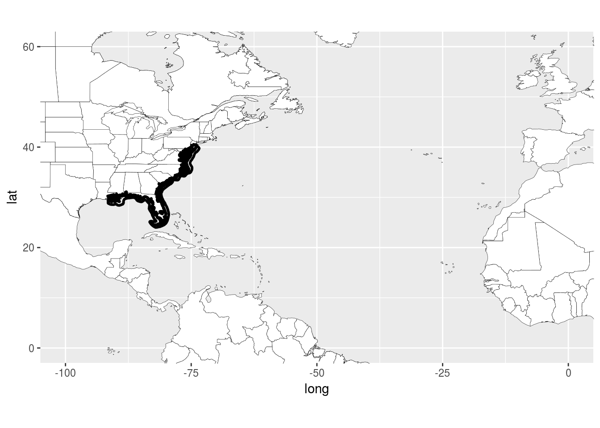
Current and Forecast Wind Field Radii
gis_windfield("AL142016", advisory = "33")## [1] "http://www.nhc.noaa.gov/gis/forecast/archive/al142016_fcst_033.zip"wf <- gis_windfield("AL142016", advisory = "33") %>% gis_download()Initial radius
wf_init <- wf$al142016_2016100606_initialradii
wf_init@data$id <- rownames(wf_init@data)
wf_init.points = broom::tidy(wf_init, region = "id")
wf_init <- dplyr::left_join(wf_init.points, wf_init@data, by = "id")p + geom_polygon(data = wf_init,
aes(x = long, y = lat, fill = factor(RADII)), alpha = 0.5)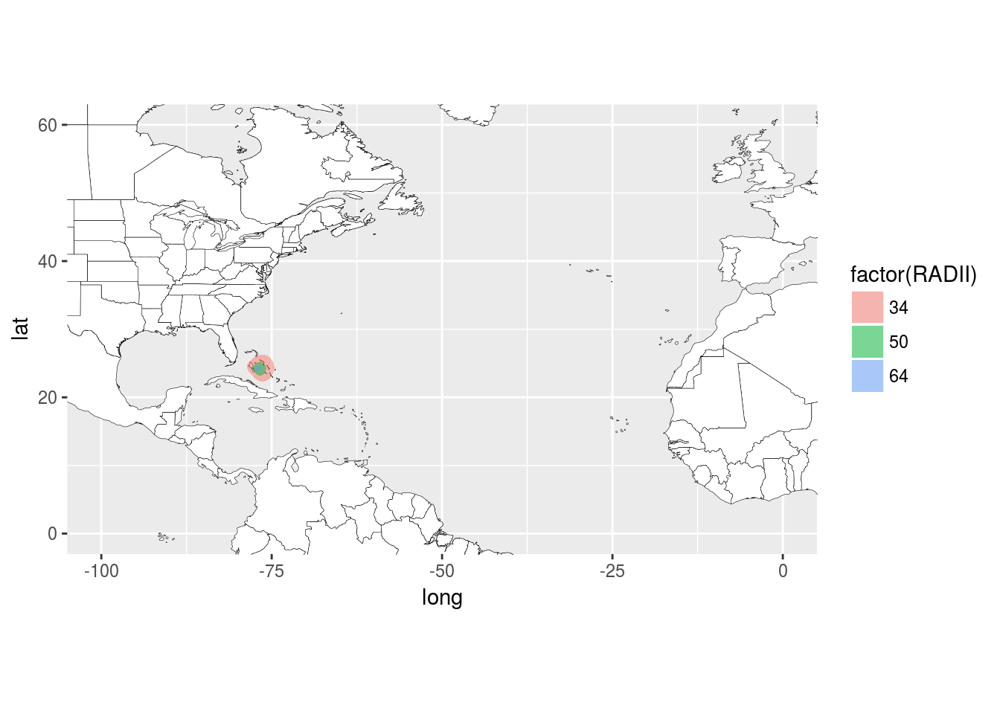
wf_fcst <- wf$al142016_2016100606_forecastradii
wf_fcst@data$id <- rownames(wf_fcst@data)
wf_fcst.points = broom::tidy(wf_fcst, region = "id")
wf_fcst <- dplyr::left_join(wf_fcst.points, wf_fcst@data, by = "id")p + geom_polygon(data = wf_fcst,
aes(x = long, y = lat, group = group, fill = factor(RADII)),
alpha = 0.5)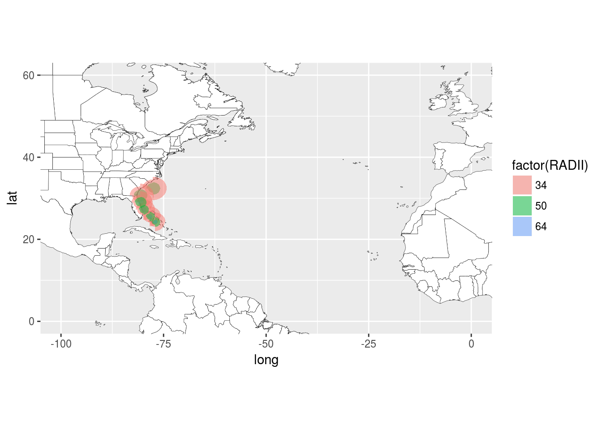
Wind Speed Probabilities
gis_wsp(datetime = "2016100606", res = 0.5)## [1] "http://www.nhc.noaa.gov/gis/forecast/archive/2016100606_wsp_120hrhalfDeg.zip"wsp <- gis_wsp(datetime = "2016100606", res = 0.5) %>% gis_download()Cumulative Probability for >34kt Winds
p + geom_point(data = broom::tidy(wsp$`2016100606_wsp34knt120hr_halfDeg`),
aes(x = coords.x1, y = coords.x2, color = PWIND120))## Warning in tidy.default(wsp$`2016100606_wsp34knt120hr_halfDeg`): No
## method for tidying an S3 object of class SpatialPointsDataFrame , using
## as.data.frame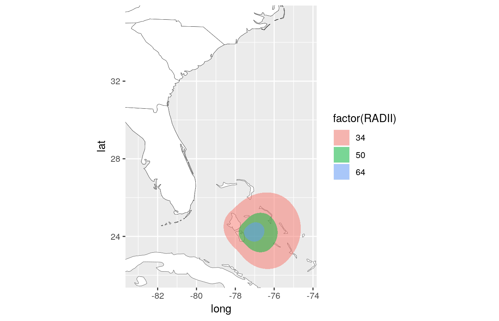
Cumulative Probability for >50kt Winds
p + geom_point(data = broom::tidy(wsp$`2016100606_wsp50knt120hr_halfDeg`),
aes(x = coords.x1, y = coords.x2, color = PWIND120))## Warning in tidy.default(wsp$`2016100606_wsp50knt120hr_halfDeg`): No
## method for tidying an S3 object of class SpatialPointsDataFrame , using
## as.data.frame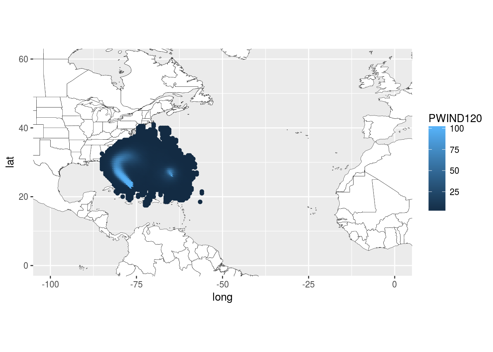
Cumulative Probability for >64kt Winds
p + geom_point(data = broom::tidy(wsp$`2016100606_wsp64knt120hr_halfDeg`),
aes(x = coords.x1, y = coords.x2, color = PWIND120))## Warning in tidy.default(wsp$`2016100606_wsp64knt120hr_halfDeg`): No
## method for tidying an S3 object of class SpatialPointsDataFrame , using
## as.data.frame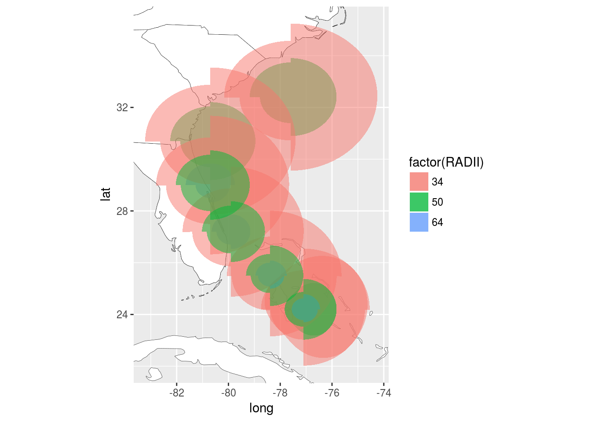